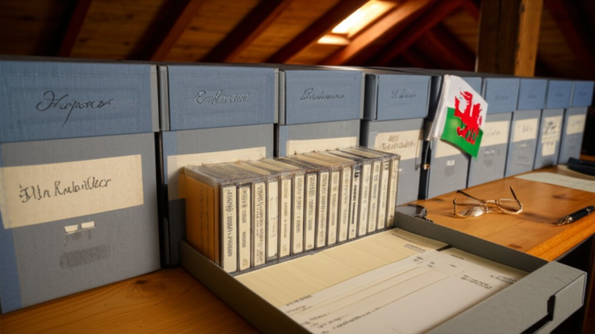
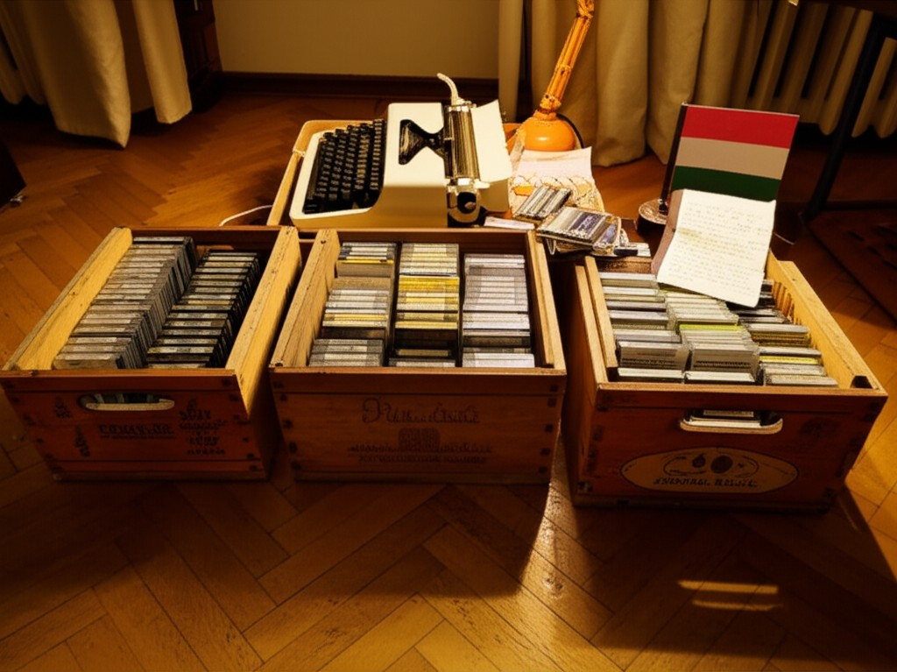
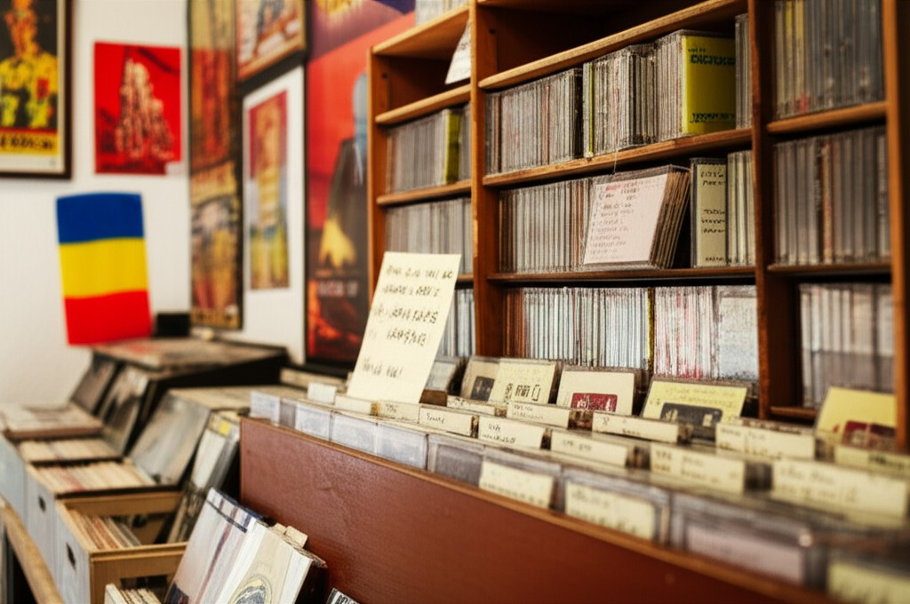
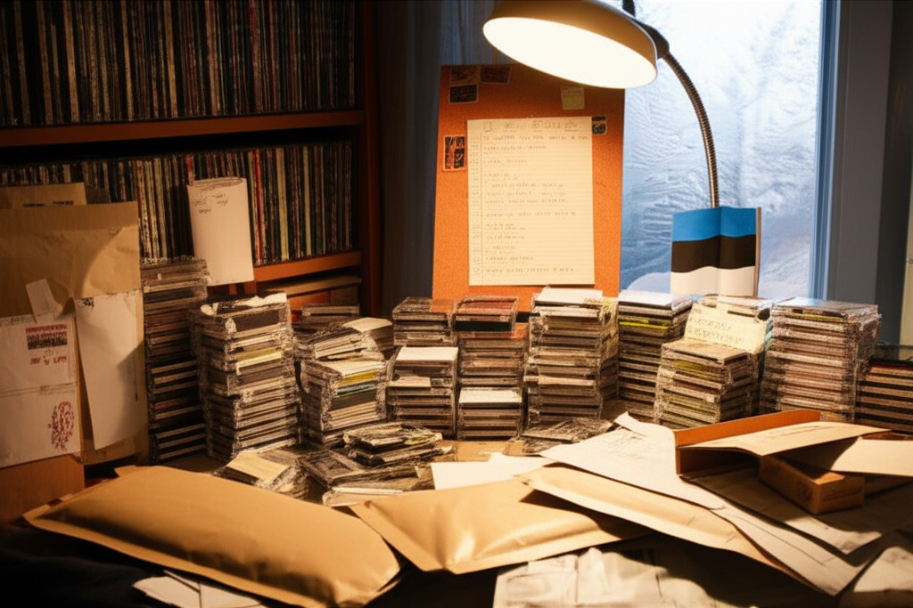

Collection Artwork Review
Each collector's tape storage — photorealistic scenes with country flags
Cornell and Company
Rhys Morgan — Cardiff, Wales / 42 shows / 1977

Archival boxes on a wooden shelf in an attic. Acid-free boxes, Norelco cases, reading glasses, fountain pen. Welsh flag. Warm afternoon light through a small window.
Wall of Sound
Anonymous collector — Budapest, Hungary / 37 shows / 1974

Wooden wine crates on a parquet floor in a Budapest apartment. Manual typewriter, faded European wine labels, desk lamp. Hungarian flag. Warm amber light.
Young Bettys
Andrei Petrescu — Bucharest, Romania / 59 shows / 1969–1973

Cassette shelves in a Bucharest record shop. Wooden shelf unit, vinyl records, concert posters, handwritten divider cards. Romanian flag. Mixed warm lighting.
New Animal
Hendrik Tamm — Toronto (Estonian expat) / 33 shows / 1979–1980

Mail-order tape trader's desk. Padded mailers, shipping boxes, handwritten lists, international postage. Estonian flag. Frost-edged window. Warm desk lamp.